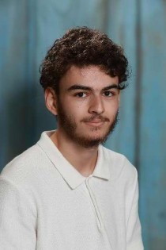

2024 - 2026 | Lycée Aubanel (Avignon)

Étudiant au Lycée Théodore Aubanel à Avignon, en deuxième année de BTS SIO (Services Informatiques aux organisations), spécialité SISR (Solutions d'Infrastructure, Systèmes et Réseaux.)
2024 - 2026 | Lycée Aubanel (Avignon)
2023 - 2024 | Militaire du rang
2019 - 2022 | La Salle — Avignon (84)